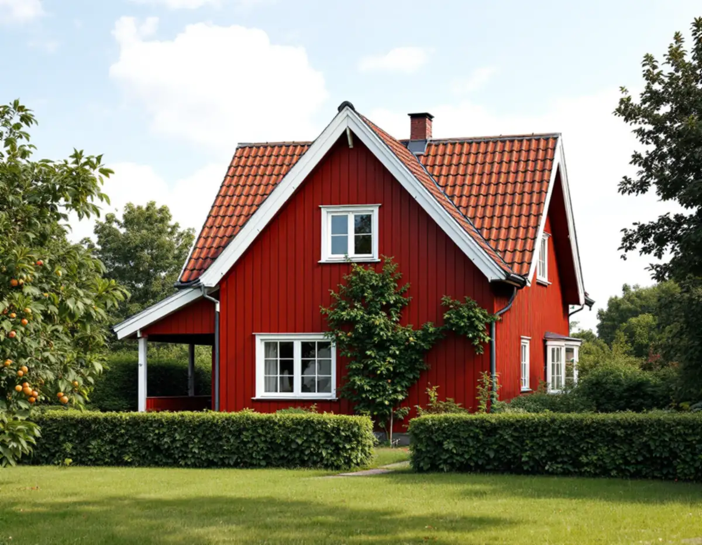
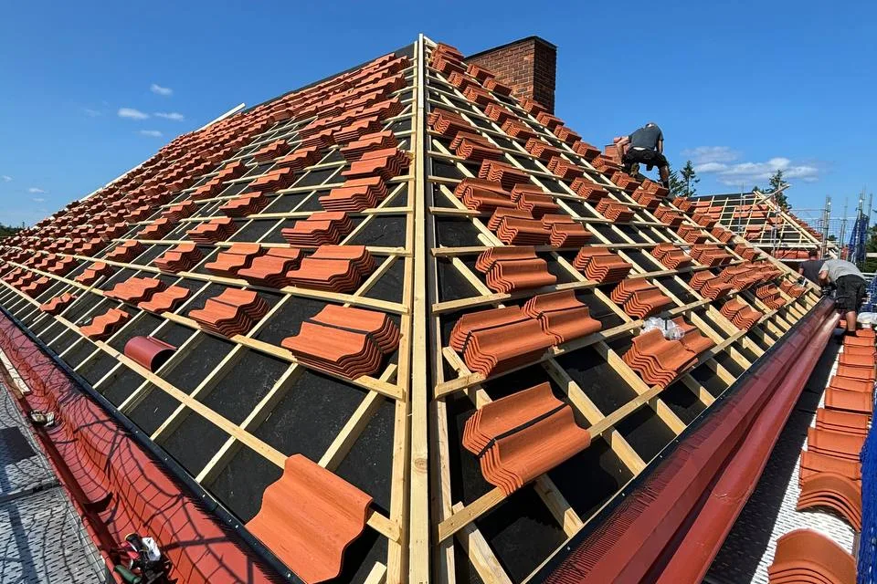
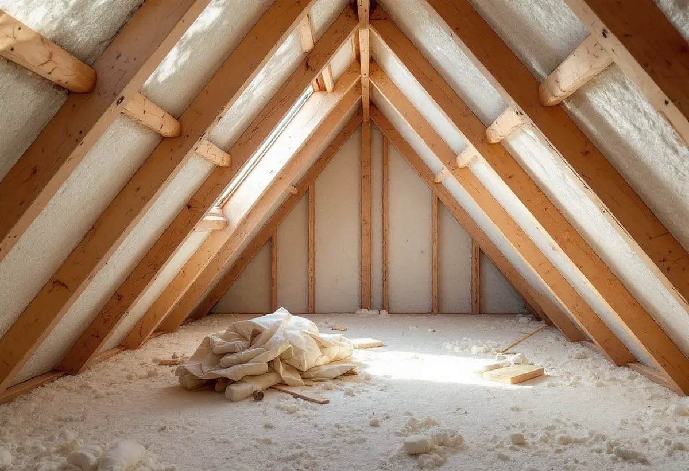

Platsbesök
Taket, vinden och önskemål om kupa går vi igenom.
När taket på en villa i Älvsjö ändå ska av är det ett tillfälle att samtidigt göra något åt vinden: en ny kupa, mer isolering eller en inredd vind. Geal Entreprenad AB byter tak på villor i Älvsjö, Långbro, Herrängen och Långsjö och planerar takbytet och vinden i samma projekt.

Stadsmuseets inventering av Älvsjö villastad beskriver två vanliga hustyper från villastadens första år. Den ena har vit slätputsad bottenvåning, gavelspetsar med mörkbrun panel och brant sadeltak täckt med rött tegel. Den andra har falurödfärgad träpanel, vita snickerier och ett brant tegeltäckt sadeltak med kupa.
Stadsplanen för Älvsjö villastad togs fram av Per Olof Hallman, enligt stadens strategi för småhusområden. Ett brant tak med kupa ger stor vindsvolym, och därför har många hus fått inredd vind genom åren.

Strategin skriver att äldre stadsplaner med generösa byggrätter finns bland annat i Älvsjö, Herrängen, Långsjö och Långbro. I tabellen är delar av Älvsjö markerade både som kulturhistoriskt värdefull miljö och med generösa byggrätter, medan Långsjö och delar av Herrängen och Långbro har generösa byggrätter utan den markeringen.
En generös byggrätt säger hur mycket du får bygga, men inte hur. Strategin betonar att områden som Herrängen, Långsjö och Långbro kan se brokiga ut men har gemensamma drag, och att byggnadernas anpassning till terrängen och gaturummet har stor betydelse vid förändringar. Vi börjar därför med detaljplanen innan kupan ritas.
Stockholms stad räknar mindre takkupor till fasadändringarna, tillsammans med till exempel byte av material på taket. På ett en- eller tvåbostadshus krävs inte längre bygglov för fasadändringar om vissa förutsättningar är uppfyllda, men utökad lovplikt gäller i särskilt kulturhistoriskt värdefulla byggnader och områden. Fasadändringar som inte kräver lov ska ändå stämma med detaljplanen.
Stadsmuseets klassificeringskarta ger en första indikation på om din fastighet berörs. En kupa som tar upp en del av takfallet kräver dessutom att takstolarna byggs om runt öppningen, och det är en ändring i bärande konstruktion.
Stockholms stad skriver att ändringar som påverkar byggnadens bärande konstruktion kräver anmälan och startbesked, att ritningar kan vara ofullständiga och att du ska kontakta en konstruktör om du är osäker. Det gäller när takstolar kapas för en kupa eller när bjälklaget förstärks för att vinden ska bli bostad.
Därför planerar vi takbytet och vinden tillsammans. Med startbeskedet klart kan det gamla taket rivas, stommen byggas om och det nya taket läggas i ett svep, utan att huset står öppet längre än nödvändigt. Om villastadens tak i övrigt kan du läsa under takrenovering i Älvsjö.
När vinden inreds eller isoleras om ändras luftflödet under taket. Ventilationen mellan isolering och yttertak behöver fungera, och anslutningarna vid takfot och kupa ska vara täta mot både regn och fukt inifrån.
Vi tar det i samma arbete som det nya taket. Om tjänsten i stort kan du läsa under takbyte och om stadsdelens tak under takläggare i Älvsjö.

Taket, vinden och önskemål om kupa går vi igenom.
Byggrätt, detaljplan och Stadsmuseets karta kontrolleras.
Takbyte, kupa och vind står var för sig.
Anmälan vid ingrepp i stommen och bygglov när det krävs.
Gammalt tak rivs, stommen byggs om och nytt tak läggs.
Vi går igenom taket, kupan och dokumentationen.
Skatteverket räknar byte och reparation av takpannor, plåttak och hängrännor på ett småhus som rotarbete, och även tilläggsisolering. Rotavdrag ges däremot inte för att bygga en helt ny bostad.
Avdraget är högst 30 procent av arbetskostnaden, högst 50 000 kronor per person och år och högst 75 000 kronor tillsammans med rutavdrag. Material och resor ger inget avdrag. Geal drar avdraget direkt på fakturan.
Takets yta och lutning, materialet, om en kupa ska byggas, hur mycket av stommen som ändras och om vinden ska isoleras eller inredas. En överblick finns i vad kostar ett takbyte. Efter ett gratis platsbesök får du ett skriftligt kostnadsförslag.
Byte av tegel-, betong- och plåttak.
Takbyte →Takbyte, takbesiktning och plåtarbeten.
Takläggare i Älvsjö →Långbro, Herrängen och Långsjö.
Takrenovering i Älvsjö →Villatomten, prickmarken och vattnet.
Attefallshus i Älvsjö →Villorna, träbjälklaget och golvvärmen.
Badrumsrenovering i Älvsjö →Byggrätt, gamla planer och planändring.
Byggföretag i Älvsjö →Villastad, nya grannhus och puts på trä.
Fasadrenovering i Älvsjö →Fönster och tilläggsisolering.
Fönsterbyte i Älvsjö →Småspröjs och fönsterluckor.
Fönsterrenovering i Älvsjö →Golvvärme under trägolv i äldre villor.
Golvläggare i Älvsjö →Slipa och ge golvet en ny kulör.
Golvslipning i Älvsjö →Villastad, flerlägenhetsvillor och kök i lager.
Köksrenovering i Älvsjö →Villastad, egnahem och småstugor i Älvsjö.
Målare i Älvsjö →Plåttak för solceller, kupor och verandor i Älvsjö.
Plåtslagare i Älvsjö →Staket, grind och plank i villastaden.
Snickare i Älvsjö →Bårder och dekor i villastaden.
Tapetsering i Älvsjö →Byggrätt, trädgårdssida och volym.
Tillbyggnad i Älvsjö →